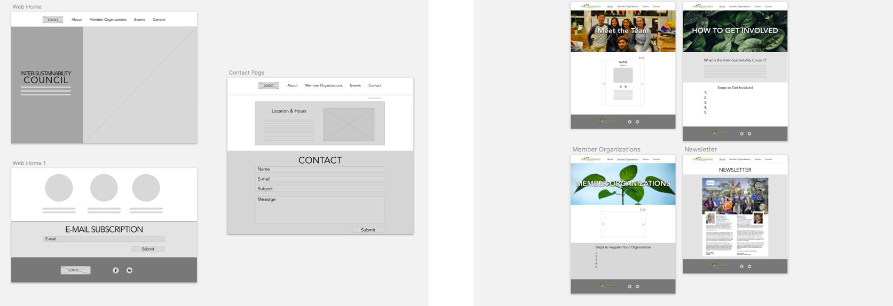

Inter-Sustainability Council
Role: UX Designer
Duration: 3 months
Tools: Sketch, Figma, Bootstrap
Skills: User Research, Wireframing, Prototyping
Introduction
The Inter-Sustainability Council (ISC) is student organization at UC San Diego. As a council, it oversees all other sustainability based organizations on campus. Students have the opportunity to become a part of this umbrella organization and further their careers in sustainability.
In a team of four, we redesigned and implemented new mobile and web iterations of a website. We worked with a client, presenting our research and design process.
Our Users
Our client informed us that their target audience was college students. However, college students can obtain so much information through other forms of social media. Therefore, we needed to understand why anyone would want to visit the ISC’s website in the first place.
We interviewed a total of ten students, and based on two different categories:
- Those who aren’t involved with sustainability on campus
- Those who are knowledgeable of sustainability and/or involved with a sustainability based organization
Based on these interview findings, I created three different personas to reflect our target users:
Competitive Analysis
Following our interviews, a competitive analysis helped us formulate more ideas and analyze the information architecture of competitors. We analyzed professional organizations as well as student organizations to answer to following question: How does a website for a sustainability based organization succeed? We wanted to get a feel for the brand that each organization communicated. How does a user know that it's a school-based organization? What does each organization prioritize on their homepage?
Analysis of two student organizations and two environmental organization
Wireframing & Prototyping
I used Figma to create low fidelity prototypes, focusing on a friendly vibe while also wanting to call students to action, to make a change in the environment. Wireframing allowed us to cycle through multiple iterations quickly and help our client determine what they want on their website.

Mobile wireframes
Web wireframes
Visual Design
We wanted to convey that the ISC is a friendly and welcoming student organization on the UC San Diego campus. We aimed to do so by picking softer shades of environmental colors for our stock images (greens, blues, browns). Because our stakeholders are primarily students, we wanted to promote scanning through a heavy use of images, particularly event and organization logos. The goal was cleanliness and the omittance of wordy paragraphs.
Design Decisions
- Listing out our member organizations instead of using a carousel. A carousel on mobile is such a pleasure to use: sliding through all 24 member organizations at ease. So why not implement one? Because a carousel would have been an inefficient use of space. The only content on the page are the member organizations’ logos, so having a carousel on its own page is just too little content. We decided we should remain consistent and take advantage of Bootstrap’s responsive layout.
- Event pages — just one. The ISC hosts five major events every year. We initially considered creating a different page for each event, but realized how tedious that would be on mobile, especially with the limited amount of information. Therefore, we consolidated all events onto one page, revealing the event details once the user taps the banner (or hovers on web).
- A cleaner “Meet the Team” page. To achieve a cleaner look, we omitted major and minor from the page.
The final web prototype
Final Reflection
The end result is a responsive website thats main goal for students is to take action. This was one if not the first project to snap me out of the web-first approach. With students always on the go, it’s smarter and more efficient to take a mobile first approach and scale up.
One of the most valuable skills I’ve learned from this project was how to communicate with a client. Because user needs and client needs sometimes conflict, it makes deadlines that much more challenging. Thus, working with a client puts into perspective how strenuous the design process can be once there are dates you have to meet.
Check out the hosted website here.